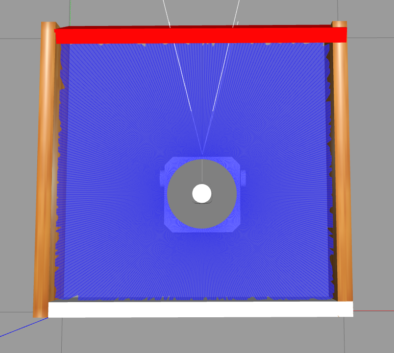
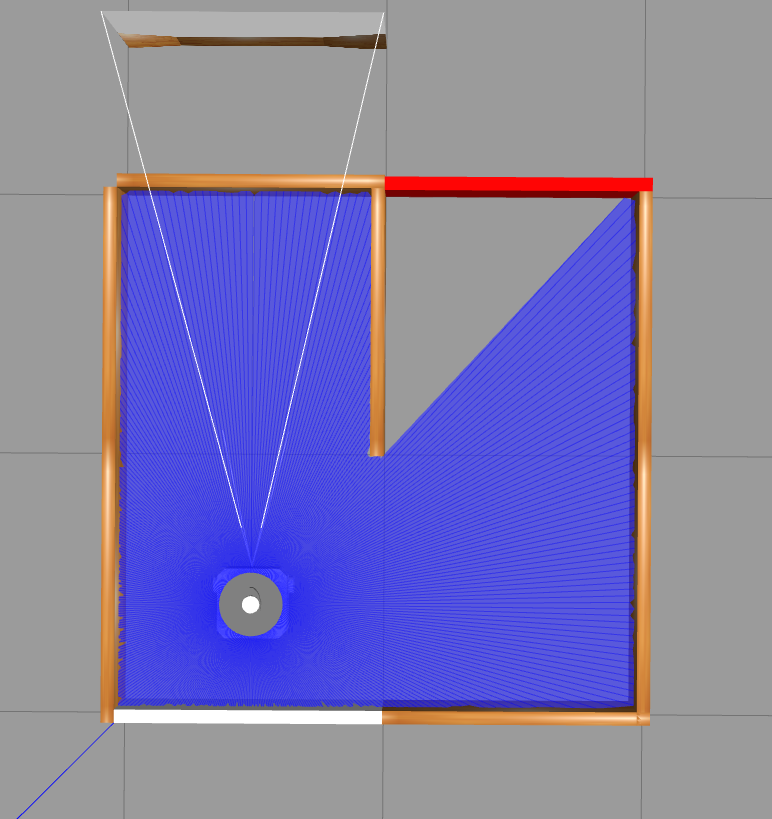
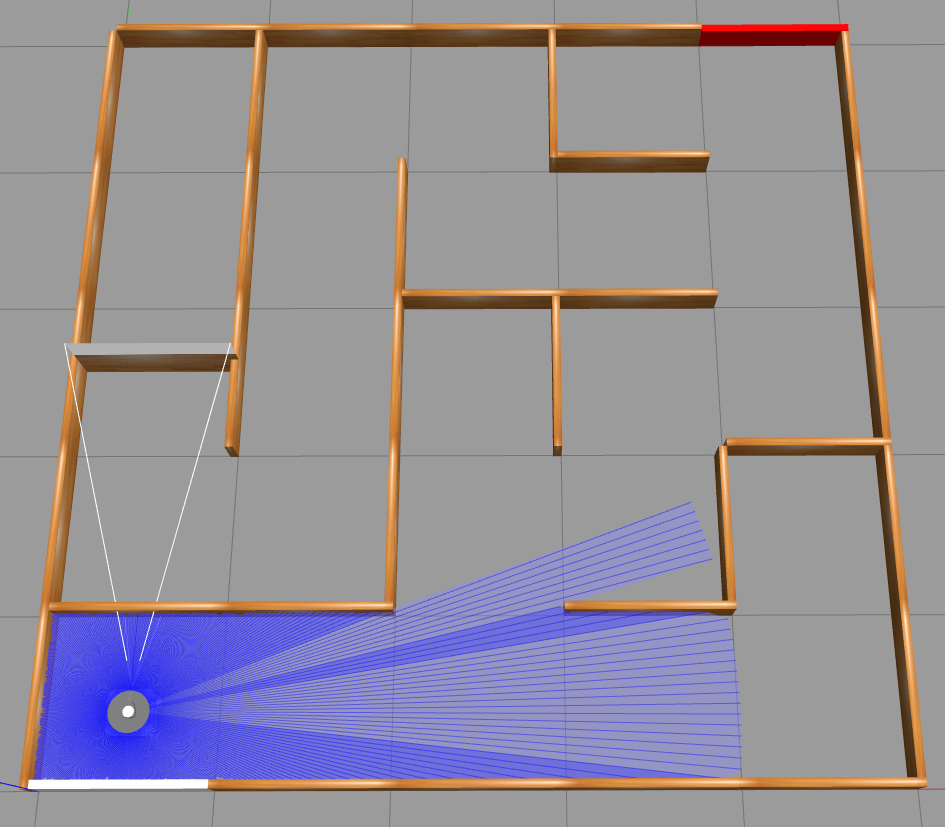

The problem#
Introduction#
In this 8 days robotic programming course, Professor Gökçe Aydos has introduced us a couple of challenges to solve so that we can gain a better understanding of how robotic programming works. However, instead of running the written code on a physical robot and solve physical mazes, we have developed and tested our code purely based on simulations (except for challenge 1 and 2).
Simulating the robot and the environment#
Professor Gökçe Aydos has provided us with the resources to create the world files and codes to run the simulation. You can find them in this repository.
With those world files and resources, we are able to run the simulations using Gazebo Simulators. With the simulations running, we can simply run our code in another terminal with the following command:
python3 <our_code.py>
Challenges#
Professor Gökçe Aydos has given us 6 challenges to solve and at the end of the challenges, we are invited to participate in a small competition to compete against our classmates.
Challenge 0#
This challenge is just to test if our installation is correct and if everything runs as expected. If the 1 x 1 world can be simulated, we are asked to determine what are the minimal distances to the walls using laser distance sensor (LDS).
The picture of the 1 x 1 world is shown below:

Challenge 1#
In the same 1 x 1 world, we need the drive the robot as close as we can to the red wall and stop without colliding. There are some questions that will help us along:
What is the minimum value of the LDS at which we should stop?
How to set the speed of the robot ?
Challenge 2#
In the same 1 x 1 world, drive the robot to the red wall and stop at a safe distance, then rotate counter clockwise and drive to the wooden wall and stop. Only the laser sensor distance sensor data are allowed to be used to solve this challenge. However, it is fine if we cannot do an exact 90 degree rotation. There are also a few questions that can help us along:
What is the safe distance where we can rotate without colliding to the red wall?
How can we calculate the rotation in degrees using only laser distance sensor data? (Assuming the robot is only rotating)
How to alleviate the noise in the laser distance sensor data?
Challenge 3#
The challenge is the same as challenge 2. But instead of using laser distance data, we should use the position and orientation published in /odom topic. Here are some tips that could help us solve this challenge:
Every cell on the grid is 1m x 1m
The topic /odom contains both the position and orientation of the robot
To convert quaternion to Euler angles, we can use from transforms3d.euler import quat2euler. Here’s the documentation for the API Reference.
Challenge 4#
Now we are using a 2 x 2 world. We need to drive the robot to the cell with the red wall and stop without collision. There are also a few questions to help us along:
How to differentiate between wooden, white and red walls?
How do we know in which cell we are?
How do we know to which cell we can or want to drive?
The picture of the 2 x 2 world is shown below:

Challenge 5#
In a 5 x 5 world, we need to make the robot touch the red wall in the shortest time possible. We should, however, never touch any other wall. When it is solved, we can also try with another 5 x 5 world using the following command:
make clean; make
The picture attached below shows one of the 5 x 5 world generated:

Competition#
It is similar to challenge 5. However, now we need to run the robot in 3 different 5 x 5 mazes with the same code and record the time of each completion. An average time will be taken in the end.